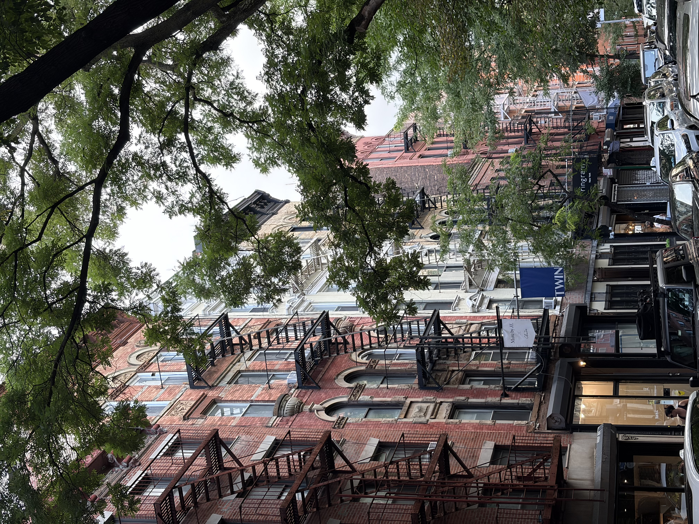
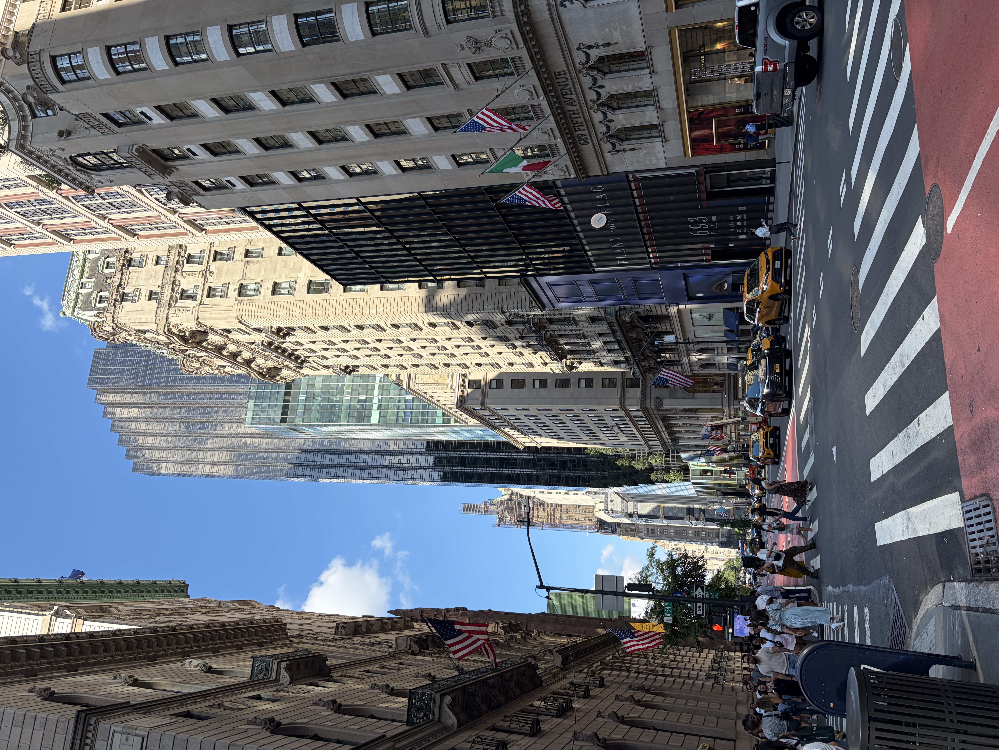
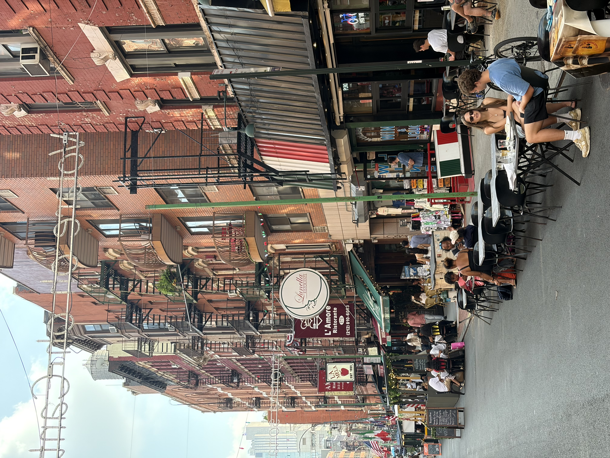
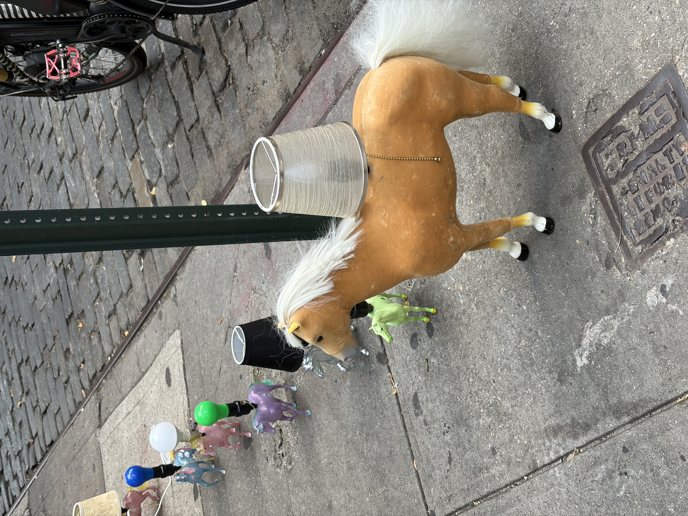
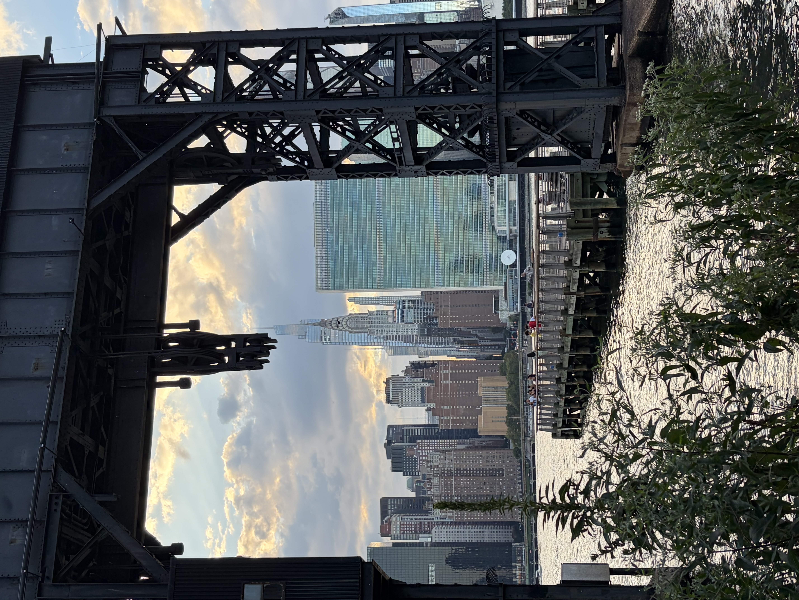
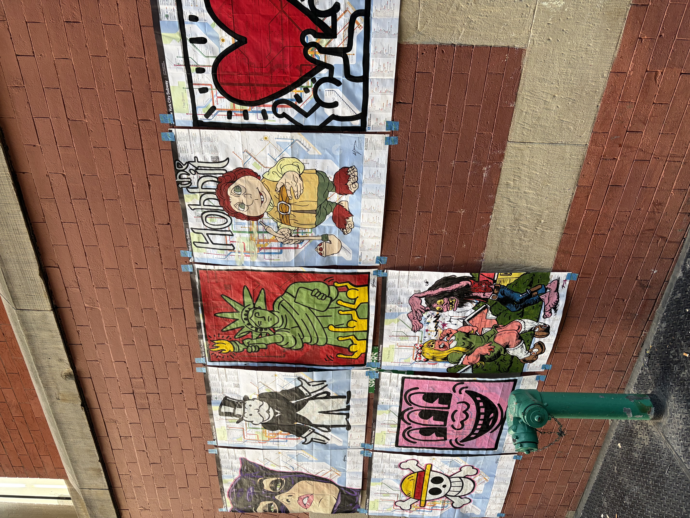

Beauty by mistake
Aug 26, 2026Perhaps everyone sees New York City differently.
As a devotee of European elegance and history, New York is hard for me to take all at once. It is hard to say whether New York is beautiful or not. It’s contradictory. It can be elegant and sophisticated. It’s also messy, loud, and exhausting. This city collects all kinds of opposites next to each other and moves faster than light.



Nothing seems to have been designed to fit together. Old brick buildings stand beside towers of glass boxes. Ornate facades and gilded columns are interrupted by ugly metal fire escapes. Church bells ring behind the scaffolded restaurants. The Beaux-Arts style fountain stands in the middle of people rushing in every direction. Women in floral sundresses walk in their three-inch heels while the skateboarders drift swiftly over the pavement. Independent galleries peek through the glass storefront, showing off the carefully hung paintings on the pristine white walls. Around the corner, the bar next door is covered in layers of bold graffiti. A street musician in a worn blue suit plays an old tune on his saxophone. His music rises above the noise of the traffic.



One of my favorite reads over the years has been Milan Kundera’s novel The Unbearable Lightness of Being . I was fascinated by the way Kundera explores the meaning we attach to the words, objects and experiences through his characters. I was reminded of a metaphor about New York. Franz and Sabina, walking through the city together, they arrive at the same idea of “beauty by mistake,” yet they experience it in opposite ways.
"Franz said, 'Beauty in the European sense has always had a premeditated quality to it. We’ve always had an aesthetic intention and a long-range plan. That’s what enabled Western man to spend decades building a Gothic cathedral or a Renaissance piazza. The beauty of New York rests on a completely different base. It’s unintentional. It arose independent of human design, like a stalagmitic cavern. Forms which are in themselves quite ugly turn up fortuitously, without design, in such incredible surroundings that they sparkle with a sudden wondrous poetry.'
…
Sabina said, 'Unintentional beauty. Yes. Another way of putting it might be ‘beauty by mistake.’ Before beauty disappears entirely from the earth, it will go on existing for a while by mistake. ‘Beauty by mistake’ - the final phase in the history of beauty.'
Franz said, 'Perhaps New York’s unintentional beauty is much richer and more varied than the excessively strict and composed beauty of human design. But it’s not our European beauty. It’s an alien world.'
Didn’t they then at last agree on something?
No. There is a difference. Sabina was very much attracted by the alien quality of New York’s beauty. Franz found it intriguing but frightening; it made him feel homesick for Europe."
I. About Sabina
Sabina grew up in Czechoslovakia under a Communist regime that wanted to impose a single way of seeing the world. She has spent her life resisting anything that attempts to impose an identity upon her. She learned to distrust anything too certain. She leaves Czechoslovakia, leaves her lovers, leaves conventions, leaves behind every identity that begins to feel like a claim on her.
Sabina is an artist. Sabina's own artistic philosophy is based on discovering beauty in unexpected juxtapositions. In her paintings, she leaves room for interruption and accident; what looks like a mistake becomes part of the composition.
“She was reminded of her paintings. There, too, incongruous things came together: a steelworks construction site superimposed on a kerosene lamp; an old-fashioned lamp with a painted-glass shade shattered into tiny splinters and rising up over a desolate landscape of marshland.”
New York gives physical form to her desire. It is a city where contradictions do not need to be resolved. You can be tasteful and vulgar, lonely and surrounded by people, anonymous and completely yourself. A person can reinvent oneself and no one would know who they were yesterday. Sabina loves that.
“For Sabina, living in truth … is only possible if there is no audience.”
II. About Franz
“Sabina understood Franz’s distaste for America. He was the embodiment of Europe: his mother was Viennese, his father French, and he himself was Swiss.”
Franz has built up a reputable career as a professor in Geneva. He has published several scholarly books. He has a wife and a daughter, but his marriage is emotionally hollow. He and his wife have become more like polite companions than lovers. She is socially confident, concerned with appearances, and proud of Franz's public reputation. Franz, on the contrary, is somewhat idealistic and inward. He longs for a life that feels more meaningful than the respectable existence he has constructed.
Then he meets Sabina.
Sabina becomes almost a fantasy of freedom. She is mysterious, independent, and completely unlike the world he knows. Franz doesn't actually know Sabina very well. He turns her into an idea. He sees in Sabina the remnants of the revolutionary world he once admired. Franz overlays the drama of her homeland onto her and finds her even more beautiful because of it.
“life on a large scale; a life of risk, daring, and the danger of death.”
Their relationship is in secret. Franz begins to imagine that his life with Sabina could become something extraordinary. He imagines her as the embodiment of freedom and danger, something grander than he has been missing, while Sabina sees herself much more simply as someone who doesn't want to be possessed.
Franz is fascinated by New York, but he cannot quite enter it. For someone who has spent his life searching for an ideal, that American version of beauty is unsettling. He feels homesick for Europe.
III. The distance between worlds
I remember wondering about how Sabina spent her whole life running away from things, and how Franz spent his life running toward something.
Neither of them is ever fully content in their life. Sabina gradually realizes that her continual leaving has also meant losing the people and places that once made up her life. She has achieved the freedom she wanted, but freedom has left her increasingly untethered. Franz goes the other way. He wants his life to mean something larger than itself. He turns Sabina into an idea of freedom, political activism into an opportunity for heroism, love into something that might finally make his life significant. Yet the man who spends his life searching for a grand, meaningful gesture dies in a random ordinary act of violence.
I think I can relate to both Sabina and Franz. There are parts of me that want to run away. And there are other parts of me that are always yearning for a person, a place, a version of my life that I imagine will finally make everything feel right.
Walking through New York, I found myself thinking about that a lot. People carry very different purposes coming to this city for different things. They pass one another on the same streets, ride the same subways, sit beside one another on the same bench, look at the same Manhattan skyline, converse about city life and yet experience entirely different cities.
A million different worlds, that is what New York feels like to me. Maybe the beauty is just becoming curious about the meaning that exists in each other. Not everything has to fit together. Maybe it is the distance between two different worlds and our attempt to cross it that makes something incredible.
- A reminder for myself to find peace in the unresolved contradictions